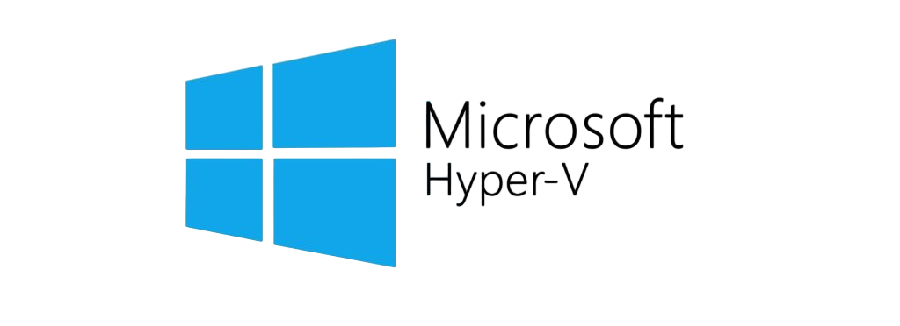
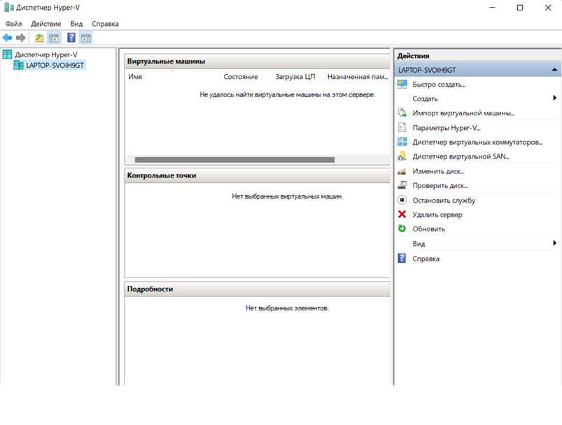
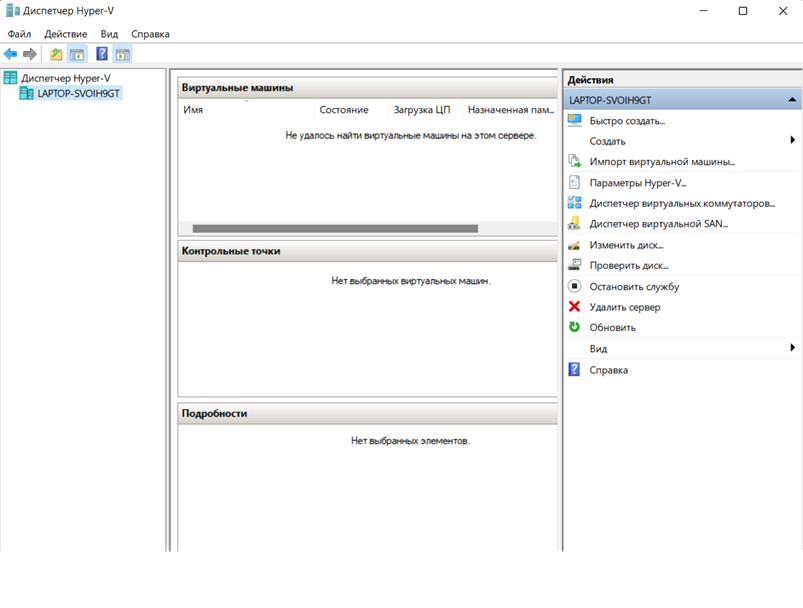

Про Hyper-V

Hyper-V — это технология виртуализации на основе низкоуровневой оболочки. Hyper-V использует Windows гипервизор, для которого требуется физический процессор с конкретными функциями. сведения об оборудовании см. в статье требования к системе для Hyper-V на Windows Server.


Преимуества Hyper-V
- Рациональное использование оборудования. Поддержка аппаратной виртуализации Hyper-V дает возможность сосредоточить серверы на меньшем количестве физических машин (как показывает опыт, без виртуализации их ресурсы редко используются на полную мощность). Пример из нашей практики — перенос сервера на виртуальную машину Hyper-V позволил развернуть на единственном физическом сервере одновременно сервер Active Directory, сервера терминалов и баз данных, соответственно, у заказчика получилось сэкономить средства на покупку «лишнего» оборудования и его эксплуатацию.
- Организация частной облачной среды предприятия. Система виртуализации Hyper-V поможет создать общедоступные облачные ресурсы компании и гибко управлять их использованием. Для большей безопасности и защиты виртуальных серверов Hyper-V существует технология экранирования виртуальных машин (Shielded virtual machines).
- Безопасность данных компании. В качестве одной из мер безопасности можно рассмотреть использование на клиентских ПК Hyper-V, виртуализацию физической машины. На рабочем месте сотрудника выполняем перенос физической машины в виртуальную среду Hyper-V, разворачиваем две виртуальные машины (ВМ) — рабочую и персональную. На рабочей настраиваем все необходимые ограничения доступа и политики безопасности, принятые в компании, а на персональной пользователь может делать все, что ему угодно, при этом данные компании останутся в полной сохранности, т.к. ВМ изолированы одна от другой. Встроенные средства поддержки виртуализации Hyper-V есть в Windows 7, 10 Pro или Enterprise.
- Виртуальные рабочие столы (VDI). Установка и настройка Hyper-V Server 2012 и хоста виртуализации удаленных рабочих столов предоставит пользователям личные виртуальные рабочие столы — готовое рабочее окружение с доступом к нему из любой точки мира, позволит централизовать администрирование и контролировать все пользовательские потоки данных. А средства динамической миграции ВМ дадут возможность выполнять перенос виртуальных машин Hyper-V практически незаметно для пользователей.
- Моделирование любых сред для задач разработки и тестирования приложений. Можно использовать виртуализацию при помощи Hyper-V для имитации физических компьютерных сред, в которых должно функционировать приложение. При этом нет надобности покупать и поддерживать все аппаратные комплектующие, которые понадобились бы, если бы среду воссоздавали физически, достаточно установить Windows Hyper-V и смоделировать все необходимые компоненты.
- Непрерывность бизнес-процессов. Виртуализация серверов с Windows Server Hyper-V поможет уменьшить влияние простоев, поскольку виртуальный сервер не привязан к физическому оборудованию, которое может отказать. В случае отказа его можно быстро и несложно запустить на дублирующем оборудовании (лучше всего, если выполнена настройка сети Hyper-V Windows и организован отказоустойчивый кластер серверов).
- Гипервизор Hyper-V распространяется бесплатно, его можно скачать с сайта Microsoft, устанавливается он на любой Windows или Linux сервер. Им легко управлять и просто использовать.
- Резервное копирование (снепшот) можно сделать моментально, не прерывая рабочего процесса. Откат к состоянию снепшота занимает секунды, создание копии виртуальной машины тоже. При этом подразумеваем, что в качестве накопителя на гипервизоре установлен SSD.
- Среди главных преимуществ переноса задач из физических компьютеров в виртуализованные среды – высокая доступность виртуальной машины в Hyper-V, начиная с 2012 выпуска и заканчивая более современными версиями. Компоненты Hyper-V старых версий могут быть уязвимы к атакам типа Meltdown (доступ к спекулятивному выполнению кода процессором и возможность украсть участки баз данных и пароли) и Spectre (возможность выйти за пределы виртуализованного процесса в гипервизор).